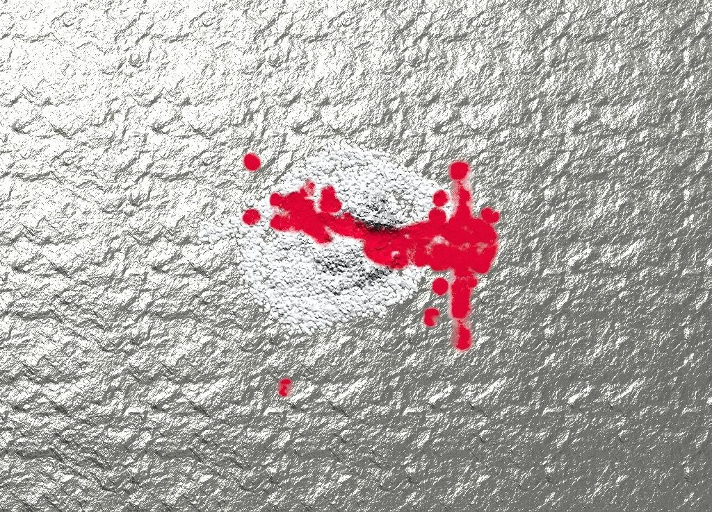

Skull-Snakes New Morbid Craze With the People


They used to make cool rings that instead of precious stones had poisonous spiders encased in glass. After the animal rights people got after the ring makers for arachnid abuse, the ring makers started a new craze about skull-snakes. They take real human skulls, pin the jaw in place and wire the vertebrae behind it to make a neck-tail. Some of the more fancy versions even have a rattler at the one. One place was making leather flap that extended from on the sides of the skull to give a cobra effect, but then the animal rights people got after them for using animal leather. Once they started using dried human skin instead, no further complaints. I hear the animal rights people don’t give a damn about people rights anymore. They aren’t allowed to. It’s because everybody is specializing these days. It’s the only way to even vaguely survive. I saw one of the animal rights guys wearing a skull-snake ring, but it was ok because they make those out of plastic which doesn’t hurt humans, insects or animals.
Related posts

Parenting IS for everybody, even people who hate kids
He kind of makes you feel sad like that song about the electric bear from The Notwist. His parents had…

Look Ma! I made a picture of cocaine on tinfoil with blood on it
Look Ma! I made a picture of cocaine on tinfoil with blood on it.
Avatar Suicide Prevention with Billy Wizard
Pants on the ground is a life changing song it helps young people not kill theyselves after seeing Avatar the…

Comments